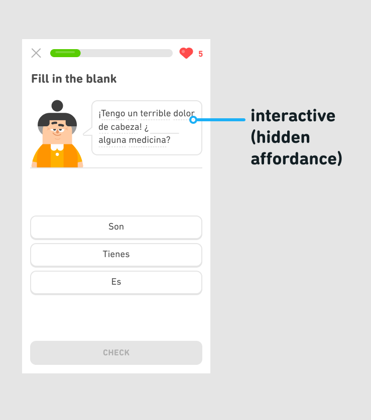

Hidden affordances are design features that allow for certain interactions, but are not immediately obvious or apparent to users. For example, words with hints on Duolingo are interactive, yet we simply use a gray, dotted line to denote that hints are available.
Hidden affordances may come in handy when trying to maintain a clean or minimal aesthetic, or when you want to avoid drawing too much attention to an object. In this case, we used a hidden affordance for hints because we didn't want learners to over-rely on them. We did this even though it made the hints a little harder to discover.
